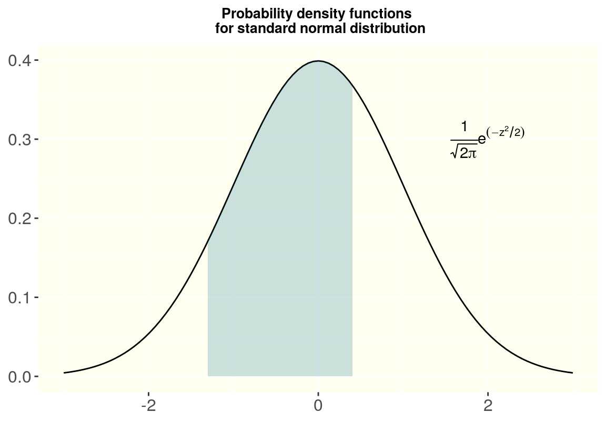
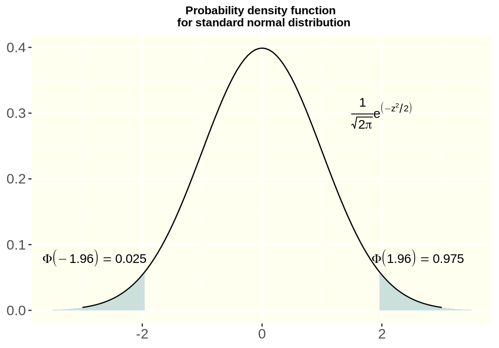

第 7 章 正態分佈
7.1 概率密度曲線 probability density function， PDF
一個隨機連續型變量 \(X\) 它的性質由一個對應的概率密度方程 (probability density function, PDF) 決定。
在給定的範圍區間內，如 \(a\sim b, (a < b)\)，它的概率滿足:
\[P(a\leqslant X \leqslant b) = \int_a^bf(x)dx\]
- 這個相關的方程，在 \(a\sim b\) 區間內的積分，就是這個連續變量在這個區間內取值的概率。
# R codes for drawing a standard normal distribution by using ggplot2
library(ggplot2)
p <- ggplot(data.frame(x=c(-3,3)), aes(x=x)) +
stat_function(fun = dnorm)
p + annotate("text", x=2, y=0.3, parse=TRUE, label="frac(1, sqrt(2*pi)) * e ^(-z^2/2)") +
theme(plot.subtitle = element_text(vjust = 1),
plot.caption = element_text(vjust = 1),
axis.text.x = element_text(size = 12),
axis.text.y = element_text(size = 12),
plot.title = element_text(size = 10, face = "bold", hjust = 0.5),
panel.background = element_rect(fill = "ivory")) +
labs(title = "Probability density functions \n for standard normal distribution",
x = NULL, y = NULL) +
stat_function(fun = dnorm,
xlim = c(-1.3,0.4),
geom = "area",fill="#00688B", alpha= 0.2)

图 7.1: Probability Density Function of a Standard Normal Distribution
注意：整個方程的曲線下面積等於 \(1\)： \[\int_{-\infty}^\infty f(x)dx=1\]
- 期望 \(E(X)=\int_{-\infty}^\infty xf(x)dx\)
- 方差 \(Var(X)=\int_{-\infty}^\infty (x-\mu)^2f(x)dx\)
7.2 正態分佈
如果一組數據服從正態分佈，我們通常用它的期望（或者叫平均值）\(\mu\)，和它的方差 \(\sigma^2\)，來描述這組數據。記爲：
\[X \sim N(\mu, \sigma^2)\]
- 它的概率密度方程可以表述爲：
\[f(x)=\frac{1}{\sqrt{2\pi\sigma^2}}exp(-\frac{(x-\mu)^2}{2\sigma^2})\]
- \(E(x) =\mu\)
- \(Var(x)=\sigma^2\)
7.3 標準正態分佈
標準正態分佈的期望（或者均值）爲 \(0\)，方差爲 \(1\)
- 記爲：\(Z \sim N(0,1)\)
- 它的概率密度方程表述爲：
\[\frac{1}{\sqrt{2\pi}}exp(-\frac{z^2}{2})\]
- 它的累積分佈方程 (cumulative distribution function， CDF)，是將概率密度方程 (PDF) 積分以後獲得的方程。通常我們記爲 \(\Phi(z)\)
再看一下標準正態分佈的概率密度方程曲線：

图 7.2: Probability Density function of a Standard Normal Distribution
- 95% 的曲線下面積在標準差 standard deviation \(-1.96\sim1.96\) 之間的區域。
- 而且，\(\phi(-x)=1-\phi(x)\)
- 任何一個正態分佈都可以通過下面的公式，標準化成爲標準正態分佈：
\[Z=\frac{X-\mu}{\sigma}\]